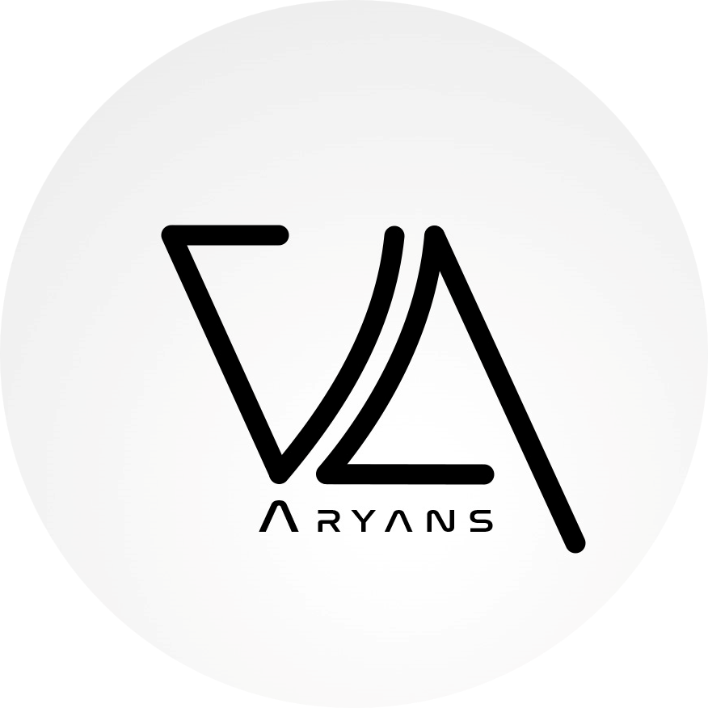

Viraj Aryans
Electronics | Engineering | Designing | AI & ML
Mobile site is still under development. Please use a larger screen to view the website. Or use the device in landscape mode. Thank you!
Electronics | Engineering | Designing | AI & ML
Here are some of my selected projects done in the fields of Electronic, Embedded Systems and Signal Processing
#Embedded Systems, #IOT, #Signal Processing
A portable conversion dock to act as a bridge between most common types of wired peripherals and host devices with wireless interfaces such as Bluetooth and Wi-Fi, using an STM32 as the MCU. A solo electronic design and prototype project out of passion.
Tech Stack: STM32, USB, Bluetooth, Python, C
Ongoing: since January 2024
Read more Home
Home